Y entre todas esas fechas…
Viajamos sin prisas, nos convertimos en tíos, celebramos bodas de amigos y familiares, reímos mucho, crecimos juntos y acumulamos momentos que no salen en las fotos, pero que lo sostienen todo.
Porque nuestra historia no va solo de años y decisiones importantes.
Va de elegirse una y otra vez.
Y de seguir haciéndolo.
Algunos de nuestros momentos favoritos
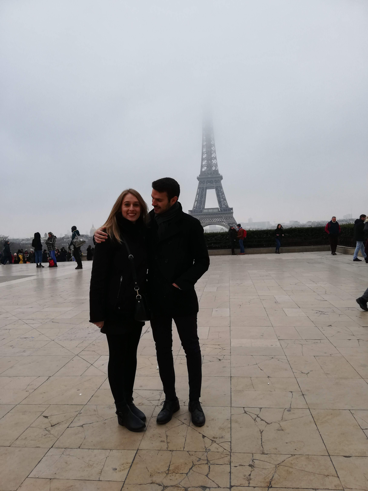
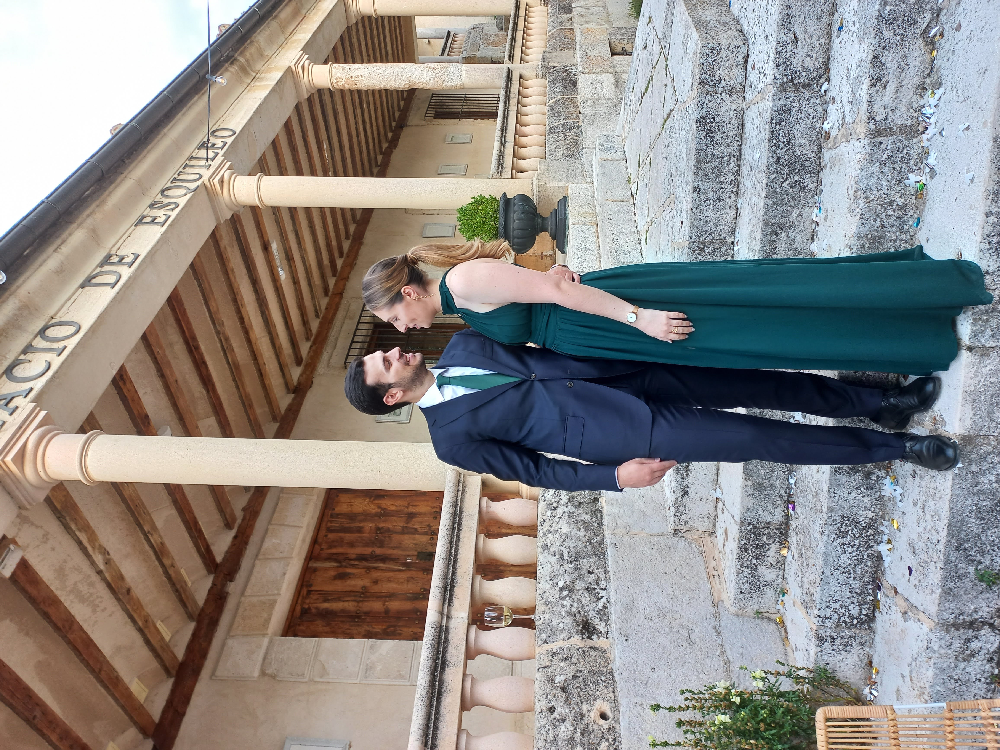
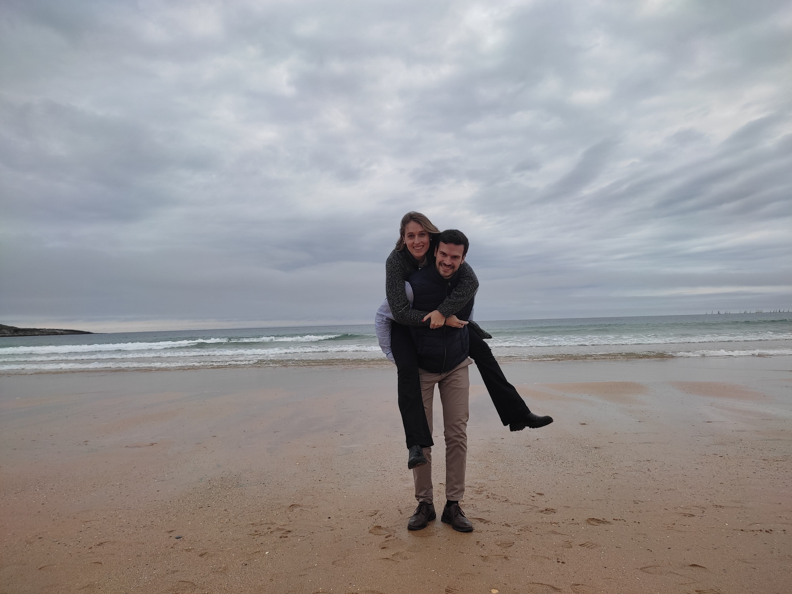
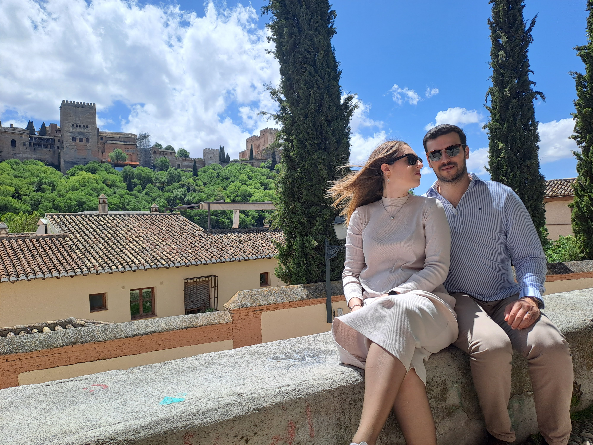
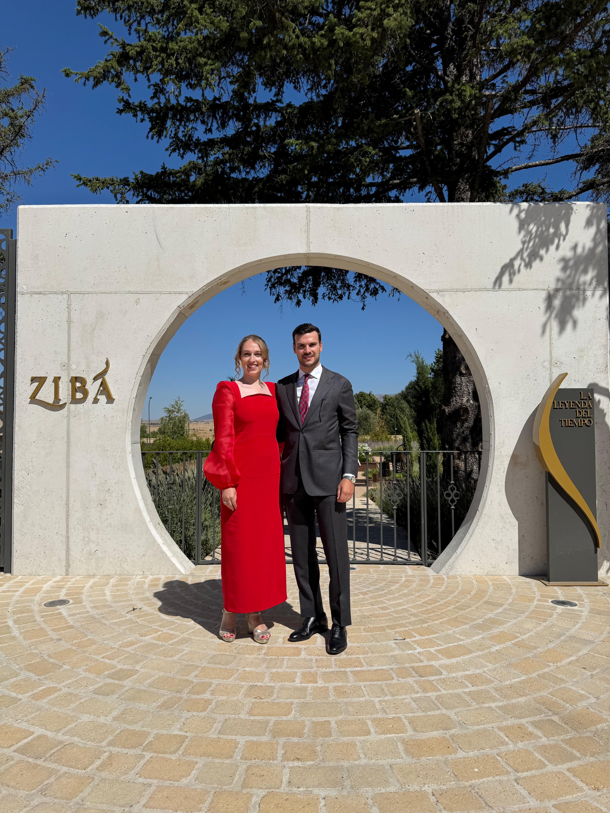
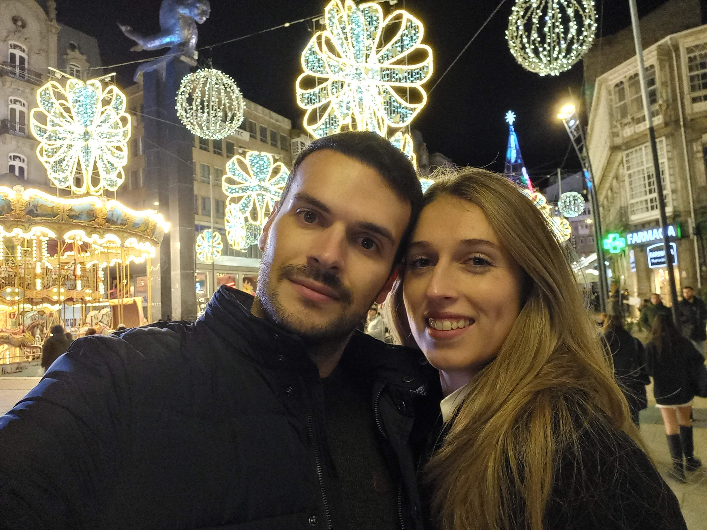
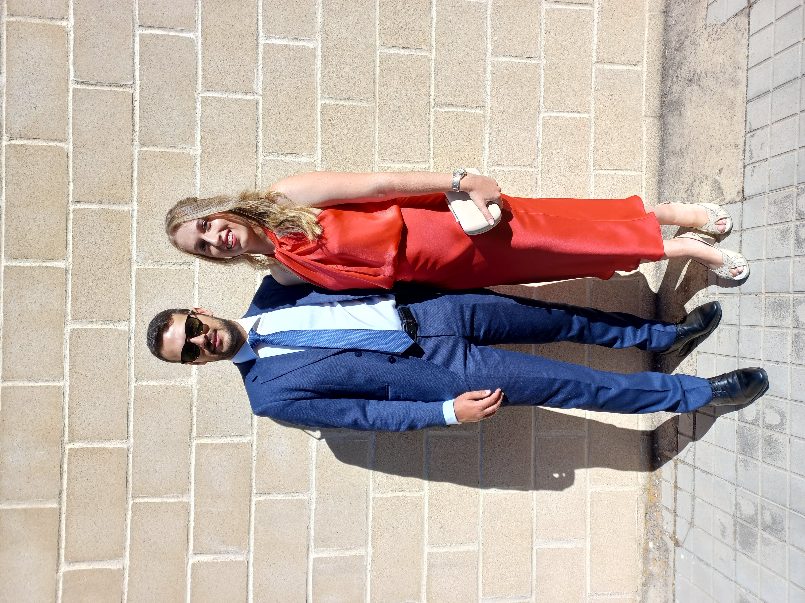
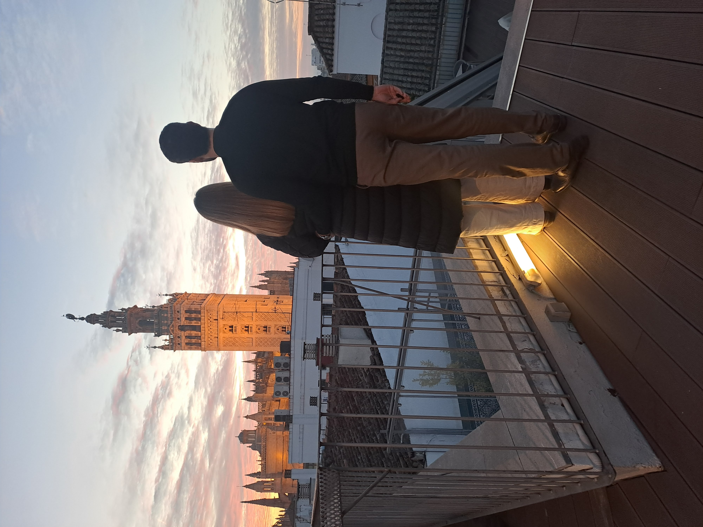
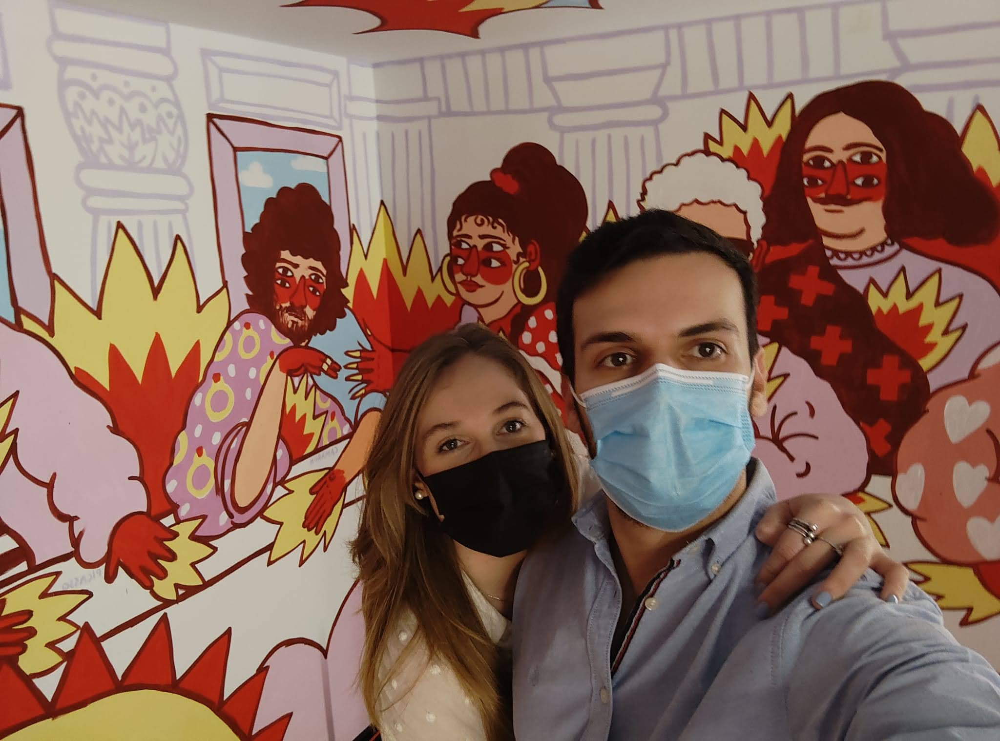
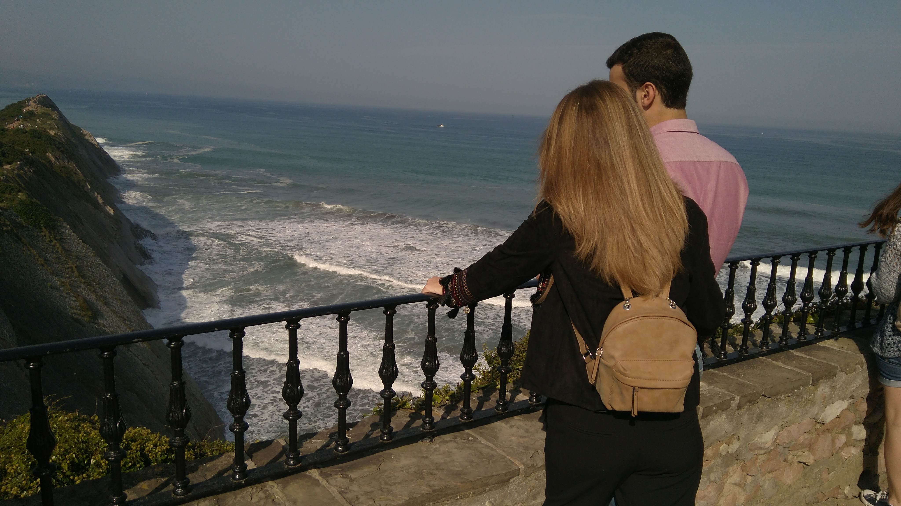
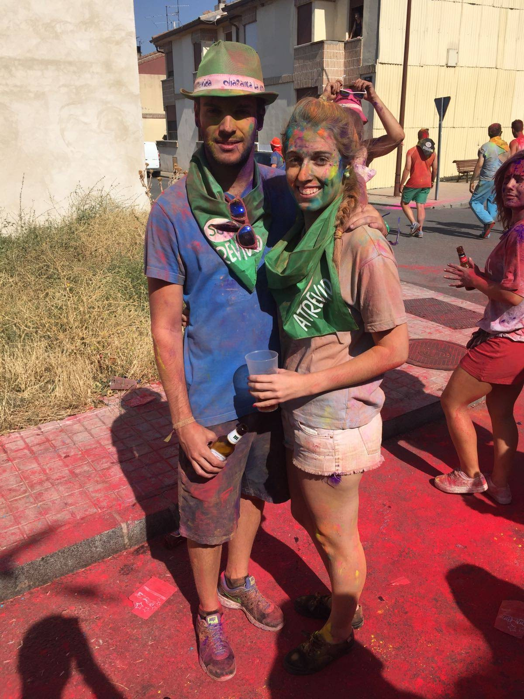
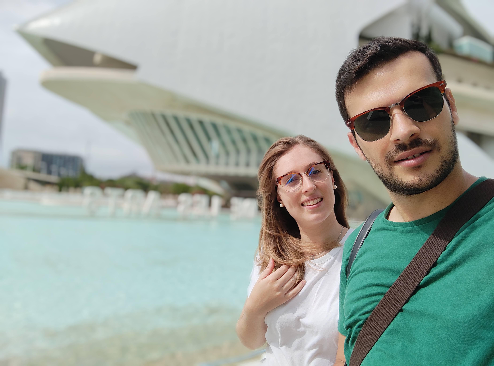
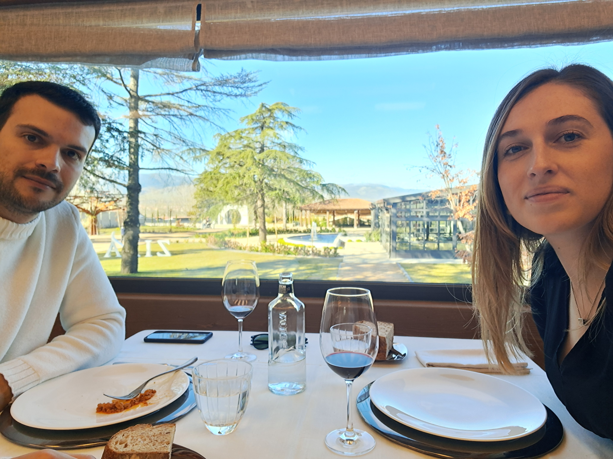
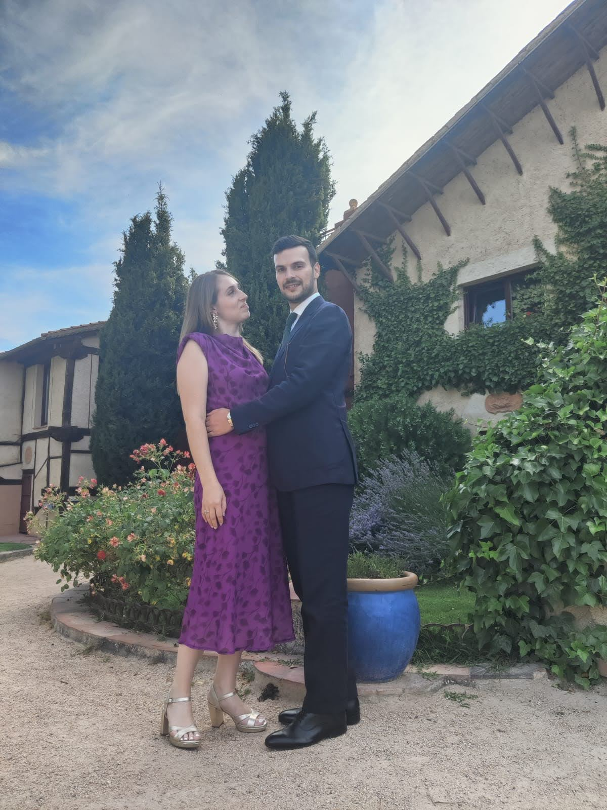